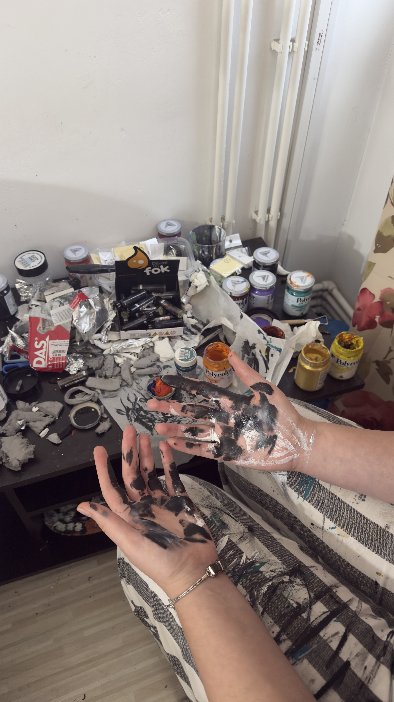

Omul din spatele măștilor
Salut! Ma numesc Katia Chelaru si sunt un artist aproape complet nevăzător. Sunt pictoriță si creatoare de masti din lut, dar fac si diferite accesorii din clay. Sper sa-ti placa arta mea!
Procesul creativ
Procesul creativ este unul foarte distractiv, tot ce fac este din pasiune pura si dragoste, de aceea pentru mine acest hobby imi ofera doar fericire, relaxare, dar si o satisfacție de necomparat.
Sursa de inspirație
Sursa de inspirație vine strict din imaginația mea si din diferite trăiri din trecutul meu. Imi place sa observ alte stiluri de arta, dar prefer ca ce produc sa fie original.
← Înapoi la Galerie